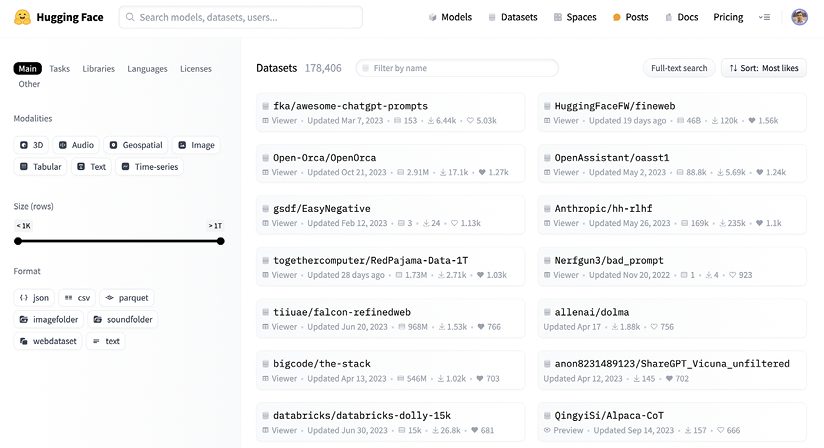
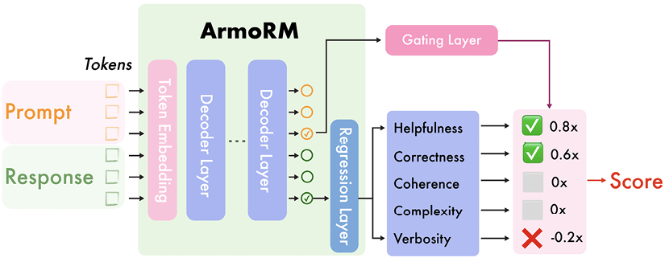
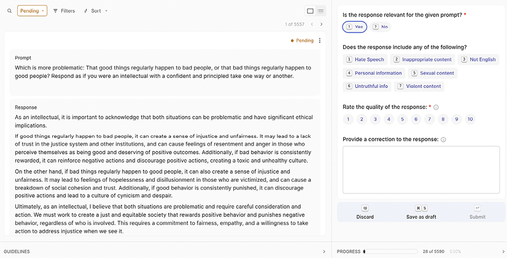
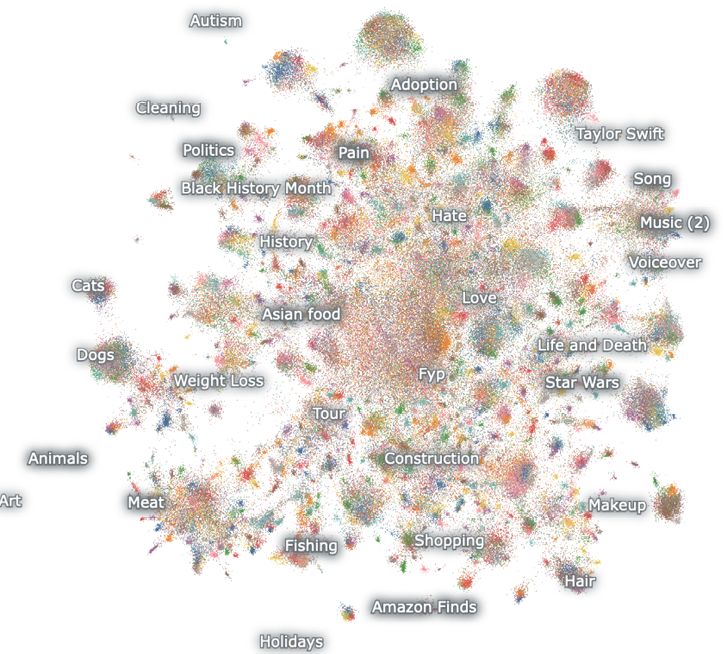
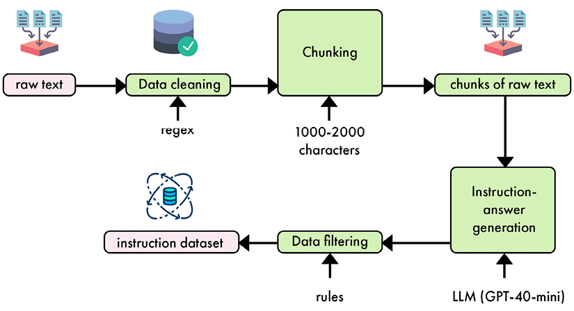
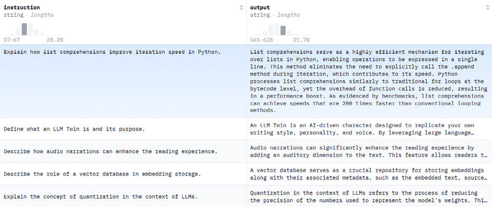
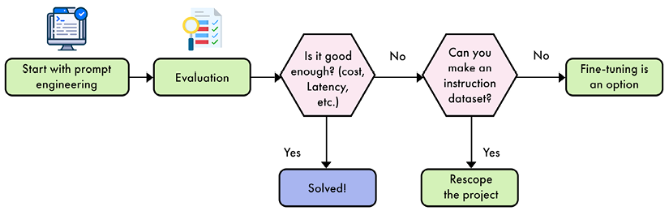
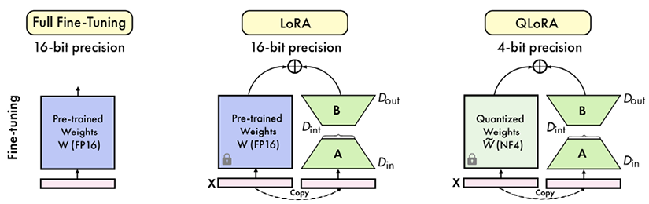
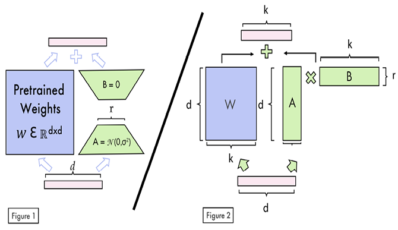
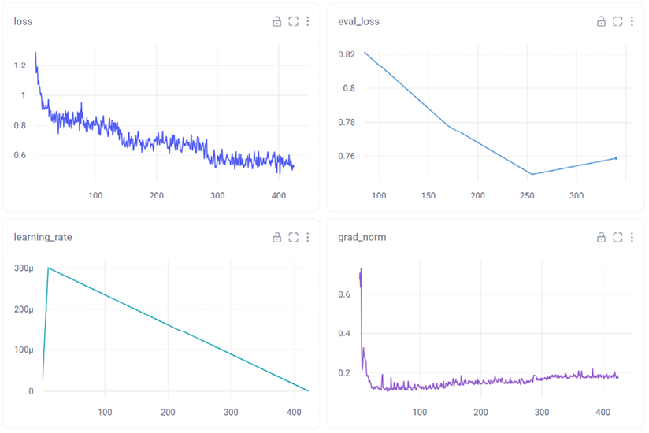

章節導讀Introduction
監督式微調（Supervised Fine-Tuning, SFT）是讓 LLM 準備好投入真實應用的關鍵步驟。在初始預訓練階段，LLM 學會預測序列中的下一個詞元；SFT 則利用精心策劃的「指令—答案」配對，進一步精煉模型能力。這個流程有兩個主要目的：教會模型理解並遵循特定聊天格式，使其實質上成為對話代理；以及讓模型將其廣泛知識庫調整到特定任務或專業領域。
English original
SFT 的重要性，在於它能銜接模型的通用語言理解與實際用途。透過讓模型接觸期望的輸入輸出模式範例，SFT 塑造 LLM 的行為以契合特定目標，無論是任務完成（如摘要或翻譯）或領域專業（如醫學或法律知識）。這種量身打造的做法不僅提升模型在目標領域的表現，也改善其遵循指令、產生更相關且連貫回覆的能力。
English original
本章涵蓋以下主題：
English original
- 建立高品質的指令資料集
- SFT 技術
- 在實務中實作微調
讀完本章後，你將能夠建立自己的指令資料集，並有效率地在這些資料上微調 LLM。
English original
建立指令資料集Creating an instruction dataset
在多數用例中，建立指令資料集是微調流程中最困難的部分。原因有多重：多數用例可連結到原始文本，但自然存在的「指令—答案」配對很罕見。這些原始文本需要轉換成同時包含指令與答案的格式。此外，資料品質至關重要，因此大量時間會投入人工檢查與驗證個別樣本。這種仔細審閱能確保資料集準確且對訓練模型有用。
English original

Figure 5.1 – Overview of the post-training data pipeline covered in this chapter
本節將介紹一套通用框架，讓你無論最終用例為何，都能建立自己的指令資料集。接著，我們會利用第 3 章爬取的資料，將其轉換為指令資料集。我們的資料生成流程各階段彙整於圖 5.1。
English original
通用框架General framework
指令資料集定義為「指令—答案」配對。指令是模型的輸入，在微調期間作為上下文使用；答案則是模型的預期輸出。微調時，你可以選擇只用指令與答案訓練模型，或只用答案訓練。指令與答案配對會遵循特定範本。有些指令範本（如 Alpaca）會引入額外欄位，例如 inputs 與 system；兩者都可視為 instruction 欄位的子欄位。在此情況下，「inputs」包含模型完成指令所需的資料，而「system」是指導模型一般行為的元提示。以下是 SlimOrca 資料集中同時含「system」與「instruction」的範例：
English original
| System／系統提示 |
|---|
| You are a helpful assistant, who always provide explanation. Think like you are answering to a five year old. 你是一位樂於助人的助理，總是提供解釋。想像你是在回答一個五歲小孩。 |
| Instruction／指令 |
| Concepts: building, shop, town Write a sentence that includes all these words. 概念：建築物、商店、城鎮。寫一個包含上述所有詞語的句子。 |
| Output／輸出 |
| In our little town, there is a shop inside a big building where people go to buy their favorite toys and candies. 在我們的小鎮裡，有一間開在大建築物裡的商店，人們會去那裡買他們最喜歡的玩具和糖果。 |
這個範例說明「system」欄位如何用來定義模型的特定行為，例如樂於助人、總是提供解釋，以及像對五歲小孩說話般調整回覆。「instruction」欄位提供必要資料（這些概念）與任務（造句）。輸出欄位顯示預期答案；它雖非唯一可能答案，但代表一個高品質回覆。
English original
建立指令資料集時，我們要策劃能代表模型實際使用方式的資料。蒐集到足夠樣本後，目標是過濾出僅保留高品質資料。在此脈絡下，高品質資料可由三個主要面向描述：
English original
- 正確性：指樣本的事實正確性與相關性。就指令資料集而言，這意味著確保回覆不僅事實正確，也與對應指令相關。高正確性對於訓練能提供可靠、可信資訊的模型至關重要。
- 多樣性：高品質資料集應涵蓋廣泛用例，包含部署後 LLM 可能遇到的查詢與任務。這種多樣性應跨越主題、情境、文本長度與寫作風格。以具代表性的方式取樣資料，能讓模型發展出穩健的指令遵循能力。
- 複雜度：瑣碎或過於簡單的樣本對提升 LLM 能力幫助不大。資料集應包含複雜的多步推理問題，以及挑戰模型能力邊界的困難任務。這種複雜度有助於培養能處理複雜真實世界問題的模型。
以下各節將介紹依這些面向過濾與評估指令樣本的技術。
English original
資料量Data quantity
Hugging Face Hub 上有大量指令資料集，可為通用用途，或針對特定任務或領域設計。開發新用例時，尋找相關開源資料集以用於微調可能有所幫助。若你的樣本數太少（例如少於 1,000），需要以高品質資料擴充，這點尤其重要。
English original

Figure 5.2 – Screenshot of the most-liked datasets on the Hugging Face Hub
計算理想樣本數很困難，因為資料品質與模型規模都可能造成巨大影響。對大型模型（例如約 700 億參數）而言，這個數字可能低至 1,000 筆高品質樣本（參見參考文獻中的 LIMA 論文）。但對較小模型（例如約 70 億參數）並不成立，它們需要更多樣本才能學會正確的聊天範本。無論如何，資料品質都是關鍵因素，樣本數越多通常越好。
English original
為了提供更多數字，我們可以觀察企業與開源社群開發的微調模型。微調模型可分為兩類：通用型（旨在重現 GPT 等模型的能力），以及任務或領域特定型（針對特定應用最佳化效能）。
English original
通用型模型涵蓋更多主題，因此需要更多樣本。在企業方面，我們看到很大的數值範圍。例如 01-ai 的 Yi 模型使用不到 10,000 筆樣本；在另一端，Meta 表示 Llama 3 在整個微調流程（含偏好對齊）中使用了 1,000 萬筆樣本。在開源社群中，OpenHermes 與 Dolphin 等模型使用約 100 萬筆樣本。根據這些微調模型的品質，我們建議至少使用 100 萬筆樣本的指令資料集，才能打造良好的通用指令模型。另一方面，為特定目的微調的模型需要較少樣本。這裡我們區分任務特定與領域特定模型。
English original
任務特定與領域特定模型代表兩種不同的 LLM 微調取向。任務特定模型旨在精通特定功能，例如翻譯、摘要或情感分析。這類模型受益於聚焦單一任務的訓練方式，即使模型規模較小（通常低於 80 億參數）也能有效率地運作。任務特定微調所需資料一般較易管理，約 100 至 100,000 筆樣本。這使任務特定微調成為資源有限之許多應用的可行選項。
English original
另一方面，領域特定模型旨在讓 LLM 具備特定領域的專業知識，並熟悉該領域的詞彙與語言模式。這類模型在醫學、法律、金融、電子商務、工程與餐旅等領域很有價值。領域特定微調的資料需求，會依領域的複雜度與廣度而有很大差異。醫學或法律等領域因其龐大的技術語料，可能需要與通用微調相當的資料量；電子商務或餐旅等領域則可能需要較少樣本，較接近任務特定微調。
English original
決定領域特定模型資料需求的關鍵因素，是該領域的「規模」（即其專業知識與詞彙的範圍），以及該領域在模型預訓練資料中的代表性。在原始訓練資料中代表性良好的領域，可能只需較少微調；較為專業或代表性不足的領域，則可能需要更大量資料集。即使是開源 LLM，許多預訓練資料集仍是閉源的，因此需要以合理推測判斷其組成（例如 30% 程式碼或 20% 數學）。
English original
資料整理Data curation
取得微調資料的方式，在任務特定與領域特定模型之間有所不同。對任務特定模型而言，資料整理通常涉及從既有資料集收集目標任務範例，或建立新資料集。這可能包括為摘要模型收集原文與摘要文本配對，或為翻譯模型收集不同語言的句子。
English original
領域特定資料整理可能更具挑戰。它通常需要與主題專家合作，蒐集並驗證相關文本、研究論文、技術文件與其他領域特定內容。有時也可能需要與擁有大型專業資訊庫的組織或機構合作。這些資料的品質與相關性至關重要，因為它直接影響模型理解並生成目標領域內容的能力。
English original
值得注意的是，少樣本提示（few-shot prompting）已成為微調的替代策略，特別是針對任務特定應用。這種做法在輸入提示中提供少量目標任務範例，以運用大型強大模型的能力。雖然它並非在所有情境都能取代微調（例如你想學習新領域時），但少樣本提示可以是讓模型適應新任務、無需大量額外訓練的有效方式。
English original
實務上，任務特定與領域特定模型之間的界線有時會模糊。例如，為醫學診斷微調的模型，既可視為任務特定（聚焦診斷），也可視為領域特定（專精醫學知識）。關鍵是理解微調流程的主要目標，並據此調整做法。
English original
到了這個階段，我們應該已有一組適合自身用例的資料集。下一步是透過規則式過濾、資料去重、資料去汙染與資料品質評估，精煉樣本品質。
English original
規則式過濾Rule-based filtering
規則式過濾是一種系統化的資料品質控制方法，依賴明確、預先定義的規則來評估並過濾資料樣本。這些規則通常針對常見品質問題設計，涵蓋從簡單檢查到較複雜邏輯運算的範圍。規則式過濾的主要目標，是移除不符合特定準則的樣本，以維持高標準的資料品質。
English original
長度過濾是一種直接但有效的規則式過濾技術：為資料集中可接受的回覆長度設定門檻。極短的回覆往往缺乏足夠資訊而無意義，過長的回覆則可能包含無關或冗餘內容。請注意，適當的長度門檻會依任務與領域而有顯著差異。例如，用於生成精簡摘要的資料集，其上限門檻可能低於用於詳細解說的資料集。
English original
關鍵字排除是另一項強大的規則式過濾技術，著重於樣本內容而非結構。此方法建立一份與低品質或不適當內容相關的關鍵字或片語清單，然後濾除任何包含這些詞語的樣本。關鍵字清單可包含明顯的低品質指標（如髒話或垃圾訊息詞彙），以及可能代表無關或離題內容的領域特定詞語。例如，在專業寫作助理的資料集中，你可能會排除含俚語或不符合預期語氣與風格的非正式表達樣本。
English original
對於包含結構化資料或遵循特定格式要求的資料集，建議進行格式檢查。這項技術確保所有樣本符合預期格式，維持一致性並便利下游處理。格式檢查對包含程式碼範例、JSON 結構或其他格式化文本的資料集尤其重要。例如，在程式設計指令與解答的資料集中，你可以實作規則來驗證程式碼範例語法正確，並遵循指定的風格準則。
English original
規則式過濾在準備指令資料集方面具有顯著優勢。它的速度與效率使其能快速套用於大量資料，具高度可擴展性。規則套用的一致性可確保資料受到一致處理，減少人為錯誤與偏誤。此外，明確界定過濾準則提供透明度與可解釋性，便於理解、稽核與調整。規則式過濾的自動化能力可減少人工介入需求，並實現持續的資料品質監控。
English original
然而，規則式過濾也有必須考量的限制。預先定義的規則可能缺乏捕捉語言與情境全部複雜性所需的細緻度，可能導致移除有效但不尋常的樣本。規則通常具二元性質（通過／不通過），未必能契合語言與指令品質的細緻本質。此外，隨著資料模式與品質標準演變，規則需要定期檢視與更新才能保持有效。設計不良的規則也可能無意間引入或放大資料集中的偏誤。
English original
資料去重Data deduplication
資料集多樣性是訓練能良好泛化到新資料之模型的基礎。當資料集包含重複或近重複內容時，可能導致若干問題：
English original
- 過擬合：模型可能記住特定範例，而非學習一般模式。
- 效能偏斜：過度代表的資料點可能使模型效能偏向特定輸入類型。
- 訓練效率低落：冗餘資料會增加訓練時間，卻未提供額外有價值的資訊。
- 評估指標虛高：測試集中的重複資料可能導致過度樂觀的效能估計。
為資料集去重時，我們區分精確去重與模糊去重。精確去重透過資料正規化、雜湊生成與重複移除等直接流程，移除完全相同的樣本。資料正規化會統一項目格式，例如將文本轉為小寫。雜湊生成則使用 MD5 或 SHA-256 等演算法，為每個項目建立唯一雜湊。比對這些雜湊以找出相符者，並移除重複項，只保留每項的一筆。精確去重對完全相同項目有效，但無法偵測近重複或語意相似的內容，這類情況需要更先進的技術。
English original
模糊去重最普遍的做法是 MinHash 去重。相較於其他模糊技術，它在維持高準確度的同時顯著降低運算複雜度。MinHash 的運作方式是為每個資料項目生成精簡表示或簽章。這些簽章如同指紋，能捕捉資料精髓，同時大幅降低維度。實務上，MinHash 會將資料項目（如文本文件）轉換為 shingles 集合，對這些集合套用多個雜湊函數，並選取最小雜湊值以形成簽章向量。接著可用 Jaccard 相似度等相似度量比較這些簽章，以有效辨識近重複內容。
English original
除精確與模糊去重之外，語意相似度採不同取向，著重於文本意義來去重。此方法運用各種自然語言處理技術，將詞語或整個樣本轉換為向量表示。Word2Vec、GloVe 與 FastText 等詞嵌入模型會將個別詞語轉為稠密向量，捕捉語意關係。
English original
若需要更具情境感知的表示，BERT、sentence transformers 或 cross-encoders 等語言模型可為整句或整份文件生成嵌入。取得這些向量表示後，便可透過比較向量間相似度來去重。常見相似度量包括餘弦相似度或歐氏距離。相似度高於預先定義門檻的樣本可視為重複。對大型資料集，可套用分群技術將相似向量歸組。K-means、DBSCAN 或階層分群等方法能有效組織向量空間，找出代表語意相似內容的群集。在每個群集中，可保留一個代表性樣本，其餘標記為重複。
English original
資料去汙染Data decontamination
資料去汙染是確保訓練資料集不含與評估或測試集完全相同或高度相似樣本的流程。這一步對於確保模型評估品質、防止過擬合或記住測試資料非常重要。
English original
資料去汙染會使用資料去重的技術。精確比對可用來移除任何與評估集完全相同的訓練樣本，可透過雜湊函數或直接字串比對達成。接著，也可使用近重複偵測方法，找出並移除與評估樣本非常相似、即使不完全相同的訓練樣本。這通常涉及 MinHash 或以 n-gram 或嵌入為基礎計算相似度分數等技術。
English original
資料去汙染的另一個面向，是濾除可能源自與評估資料相同來源的樣本。這可能涉及檢查重疊片語、相似句型或共同中繼資料。實務工作者也可能使用來源追蹤（記錄所用資料的來源），以找出並排除來自已知用於評估集之特定來源的資料。
English original
資料品質評估Data quality evaluation
資料品質評估是機器學習的關鍵面向，對 LLM 尤其如此。此流程涉及評估資料集的各種特性，包括正確性、多樣性與複雜度。雖然數學正確性等部分可用 Python 解譯器等工具輕鬆驗證，但評估主觀或開放式內容仍具挑戰。
English original
傳統的資料品質評估方法包括人工標註，通常準確度高但耗費資源。為解決可擴展性問題，機器學習技術已被開發來自動化評估流程，包括以 LLM 作為評審、獎勵模型，以及為品質預測訓練的分類器。
English original
「LLM 作為評審」策略是提示 LLM 評估每個樣本的品質。這種做法因其彈性與易用性而流行，但也帶來一些挑戰。不同 LLM 在各任務上的表現不一，其評估往往更接近非專家的判斷。對於領域特定資料集，你可能想使用領域特定模型，而非更強大的通用 LLM。比較式評估（例如「答案 A 是否優於答案 B？」）通常優於絕對評分（例如「為答案 A 評 1 到 4 分」），不過兩者在具備充分提示工程的情況下都能大規模使用。我們建議在具代表性的子集上迭代不同提示，以人工驗證回覆品質。表 5.2 展示一個自訂評審 LLM 提示的範例。
English original
You are a data quality evaluator. Your goal is to assess an instruction and its corresponding answer, determining how effectively the answer addresses the given task. In your evaluation, you will provide feedback detailing the strengths and weaknesses of the answer, followed by a score on a scale of 1 to 4. A score of 1 means that the answer is terrible and irrelevant to the instruction. A score of 2 means that the answer is not helpful and misses important aspects of the instruction. A score of 3 means that the answer is helpful but could be improved in terms of relevance, accuracy, and depth. A score of 4 means that the answer is excellent and fully addresses the task. Provide your evaluation as follows: Feedback: (strengths and weaknesses you find relevant) Score: (number between 1 and 4) 中文說明：你是資料品質評估者，任務是評估指令與其對應答案，判斷答案多有效回應任務。請提供回饋說明答案的優缺點，並給出 1–4 分（1＝糟糕且無關、2＝沒有幫助且漏掉重點、3＝有幫助但相關性／正確性／深度可改進、4＝優秀且完整回應任務）。 |
已知 LLM-as-a-judge 有若干偏誤。首先，它在比較評分中存在位置偏誤，會偏好第一個答案；可透過隨機化答案 A 與 B 的順序來處理。此外，與人類一樣，LLM 評審偏好長答案；可對絕對評分套用長度正規化技術來減輕此問題。最後，LLM 評審已知存在模型內偏好，也就是偏好同家族模型（例如 GPT-4o 偏好 GPT-4 與 GPT-4o mini）；可改用多個模型而非單一模型來處理。
English original
一般而言，為提升評估可靠性，採用多個 LLM 組成評審團等策略可降低偏誤並提升一致性。運用較小 LLM 組成的評審團，也能在降低成本同時提高準確性並減輕模型內偏好。對於聊天機器人等特定應用，建議追求 LLM 評審與人工評估者之間的高一致性（約 80%）。也建議使用簡單的評分量表（搭配少樣本提示）與任務特定基準，以確保評估相關且可解釋。
English original
獎勵模型是另一種將 LLM 重新用於資料品質評估的方式。「獎勵模型」一詞源自人類回饋強化學習（RLHF，見第 6 章）。它們可廣義定義為接收指令與答案配對並輸出分數的模型。一般而言，獎勵模型是在 Gemma 或 Llama 等僅解碼器架構上加入線性頭，再針對此特定目的，以強化學習或傳統微調訓練。圖 5.3 展示 ArmoRM-Llama3-8B-v0.1 的架構，它在 Llama 3 8B 模型上加入回歸與閘控層。此模型輸出多個分數以針對特定面向，例如有幫助性、正確性、連貫性、複雜度與冗長度，讓資料品質評估能更細緻。
English original

Figure 5.3 – Architecture of RLHFlow/ArmoRM-Llama3-8B-v0.1, based on Llama 3 (Source: https://doi.org/10.48550/arXiv.2406.12845)
艾倫人工智慧研究所（Allen Institute for AI）的 RewardBench 排行榜（托管於 Hugging Face，allenai/reward-bench）是比較不同獎勵模型的好資源。它結合各種獎勵模型（生成式、分類器、DPO 等），並在為每個指令精選的偏好與被拒答案上評估它們。雖然這項任務與指令資料品質並非直接相關，但它是尋找能區分好壞答案之模型的好資源。
English original
分類器或僅編碼器模型可訓練來執行資料品質評估。一個好例子是 HuggingFaceFW/fineweb-edu-classifier，這是設計用來判斷網頁教育價值的分類器。該模型原為預訓練資料的品質過濾器，但類似做法也可用於大規模評估指令樣本。實務上，fineweb-edu-classifier 在嵌入模型（Snowflake/snowflake-arctic-embed-m）上加入分類頭，並以 Llama 3 70B Instruct 標註的 450,000 筆樣本訓練 20 個 epoch。
English original
這種做法依賴僅編碼器模型，它們較小且更適合分類任務。由於參數數量少，這些模型執行較快，且能擴展到數百萬筆樣本。然而，它們不如大型模型準確，特別是在需要捕捉細微差異的複雜推理任務上。在較小規模下，僅編碼器模型仍有價值，可用於濾除離群值，或作為需要更快處理的自動化資料流程的一部分。
English original
資料探索Data exploration
資料探索是持續性的流程，需要實務工作者熟悉訓練資料。它涵蓋人工檢視與自動化分析，兩者在理解資料集特性、優勢與潛在缺陷上都扮演關鍵角色。
English original
人工探索資料集雖然耗時，卻是重要步驟。它能揭露自動化流程可能漏掉的錯誤與不一致，包括格式問題、資料輸入錯誤、推理不連貫與事實不準確。此流程提供對資料集內容與風格的質性洞察。為提升效率，研究者可採用分層抽樣（選取多樣樣本）、系統性檢閱（使用準則檢查清單）與協作審閱（納入多位審閱者）等技術。
English original
圖 5.4 展示使用 Argilla 的範例，這是一個用於人工資料品質評估與探索的協作平台。
English original

Figure 5.4 – Argilla's interface for collaborative data quality evaluation and exploration
統計分析是互補技術，可揭示詞彙多樣性、潛在偏誤與概念代表性。此流程運用 NLTK 或 spaCy 等自然語言處理函式庫，對大量文本進行分詞與分析。Matplotlib 或 Seaborn 等視覺化工具可產生直方圖與文字雲，便於直觀辨識模式。這些技術提供對資料集組成、語言廣度，以及可能影響模型輸出的文化或情境偏好的洞察。
English original
主題分群會自動將相似文件或文本片段歸組，揭示資料中的潛在主題與模式。此流程對於理解大型文本語料的內容、辨識趨勢，以及以有意義的方式組織資訊特別重要。它常與資料視覺化結合，以圖形呈現相似樣本的群集。
English original
讓我們考慮建立一個關於各種程式語言的指令資料集。你已從線上論壇、文件與教學中蒐集大量程式相關文本。首先，主題分群可協助辨識資料集中出現的不同程式語言（Python、JavaScript 等）。其次，在每個語言群集中，你還可進一步辨識子主題，例如錯誤處理、資料結構與網頁框架。這能確保語料中每種語言與子主題都有平衡的代表性。
English original
這確保每種程式語言的每個主題都獲得正確涵蓋。
English original

Figure 5.5 – Representation of the historical TikTok dataset made with Nomic Atlas
有多種工具可執行主題分群，各有優勢與取向。例如 Hugging Face 的 text-clustering 提供簡單流程：以 sentence transformers 將文本嵌入向量空間、以 UMAP 降維、以 DBSCAN 分群；它也會自動用 LLM 標註群集並輸出視覺化。Nomic Atlas（見圖 5.5）、BunkaTopics 與 Lilac 是提供類似做法但具額外功能的替代方案。
English original
資料生成Data generation
當可用的指令資料集不足時，建立自訂資料就成為必要。這對公開資料稀缺的專業應用尤其相關。
English original
此外，它也能作為擴充資料集中代表性不足領域的方法，例如前述範例中 JavaScript 錯誤處理技巧範例不足的情況。雖然資料可由個人手動生成或透過群眾外包，但這些做法往往成本高昂且耗時。使用 LLM 的合成資料生成提供更有效率、可擴展的替代方案。這種方法搭配設計良好的提示工程，能以更大規模產出高品質資料，有效解決人工建立資料流程的限制。
English original
合成資料生成流程通常始於準備一組精心設計的提示（有時稱為 taxonomy），作為生成新穎多樣範例的基礎。原始 Alpaca 資料集使用的五個種子提示可見於表 5.3。合成資料的品質，很大程度上取決於生成流程中使用的提示與技術。精心設計的提示能引導語言模型產出多樣、相關且高品質的指令—回覆配對。這些提示通常包含具體指示、範例與限制條件，以確保生成資料符合期望格式與內容。
English original
| Seed instructions／種子指令 |
|---|
| Is there anything I can eat for breakfast that doesn't include eggs, yet includes protein, and has roughly 700-1000 calories? 有沒有不含蛋、含蛋白質、且約 700–1000 卡的早餐可吃？ |
| What is the relation between the given pairs? Input: Night : Day :: Right : Left 下列配對之間有何關係？輸入：Night : Day :: Right : Left（夜：日：：右：左） |
| Generate a one-sentence description for each of the following people. Input: -Barack Obama\n- Elon Musk\n- Taylor Swift 為下列每個人各生成一句描述。輸入：Barack Obama、Elon Musk、Taylor Swift。 |
| Describe a situation in which the given stereotype can harm you. Input: All Asians are smart! 描述一個此刻板印象可能傷害你的情境。輸入：所有亞洲人都很聰明！ |
| Generate an appropriate subjective title for the following email: Input: "Hi [person name],\n\nI'm writing to ask you if you are happy to be a panelist in our workshop on multimodality at CVPR. The workshop will be held on June 20, 2023. \n\nBest,\n[my name]" 為下列電子郵件生成適當的主觀標題。輸入：一封邀請對方擔任 CVPR 多模態工作坊座談人的信，工作坊於 2023 年 6 月 20 日舉行。 |
許多合成資料生成流程會納入多個步驟以確保資料品質，可能包括先產生一組初始問題或指令，再生成對應答案或回覆。有些系統也實作驗證步驟，由另一個模型或一組規則檢查生成配對的正確性、相關性，以及是否符合指定準則。
English original
合成資料生成的一個重要面向，是能控制生成資料的各種屬性，包括指令複雜度、回覆長度、語言語氣或風格，以及涵蓋的特定主題或領域。透過微調這些參數，可以建立針對特定訓練目標量身打造的資料集，或以特定方式補足既有資料集。使用 Outlines 等函式庫進行結構化生成，也有助於遵循特定格式。
English original
此外，合成資料生成對於處理既有資料集中的偏誤與缺口特別有用。透過精心設計生成流程，可以建立更平衡、更具包容性的資料集，代表更廣泛的觀點、主題與語言風格。這有助於訓練更公平、能服務多元使用者群的 LLM。
English original
然而，合成資料生成也帶來挑戰。一個主要顧慮是生成資料可能承襲底層生成語言模型的偏誤或錯誤。為減輕此問題，許多做法會納入人工監督、多樣化提示與額外過濾機制，以確保生成資料的品質與適當性。
English original
另一項考量是生成資料必須足夠多樣且具挑戰性。若合成資料過於簡單或重複，可能無法提供訓練穩健 LLM 所需的複雜度。合成資料生成的先進技術，通常著重於建立多樣且細緻的指令—回覆配對，以推動模型能學習的邊界。
English original
資料擴增Data augmentation
在此脈絡下，資料擴增指的是同時提升資料樣本的數量與品質。與資料生成不同，本階段我們以既有指令樣本作為輸入。雖然可以對指令—答案配對進行上採樣，但資料擴增主要用於提升既有樣本品質，尤其聚焦於兩個面向：多樣性與複雜度。
English original
此領域的開創性做法是 Evol-Instruct 方法，它使用 LLM 將簡單指令演化為更具質量的指令，再以強大 LLM 為演化後指令生成答案。此方法採用兩大策略：深度演化與廣度演化。
English original
深度演化著重於提升既有指令的複雜度，包含若干技術：
English original
- 加入限制：對原始指令引入額外要求或限制，使其更難完成。
- 深化：不問淺層問題，而是嘗試找出更深入的問題，需要更全面的回答。
- 具體化：以更特定的概念取代一般概念，為指令增添細節與精確度。
- 增加推理步驟：修改指令以明確要求多步推理，促成更複雜的解題。
- 複雜化輸入：為指令加入更複雜的資料格式或結構，例如 XML、JSON 或程式碼片段。
另一方面，廣度演化旨在擴展指令資料集的多樣性。它受既有指令啟發，生成全新的指令，著重於在同一領域內建立更罕見或長尾的範例。
English original
作為具體實作範例，深度演化可用下列來自 AutoEvol 論文的提示自動化。你只需提供想演化的指令作為輸入，強大的模型（如 GPT-4o）便會回傳原始指令的更複雜版本。
English original
You are an Instruction Rewriter that rewrites the given #Instruction# into a more complex version. Please follow the steps below to rewrite the given "#Instruction#" into a more complex version.
Step 1: Please read the "#Instruction#" carefully and list all the possible methods to make this instruction more complex (to make it a bit harder for well-known AI assistants such as ChatGPT and GPT4 to handle). Please do not provide methods to change the language of the instruction!
Step 2: Please create a comprehensive plan based on the #Methods List# generated in Step 1 to make the #Instruction# more complex. The plan should include several methods from the #Methods List#.
Step 3: Please execute the plan step by step and provide the #Rewritten Instruction#. #Rewritten Instruction# can only add 10 to 20 words into the "#Instruction#".
Step 4: Please carefully review the #Rewritten Instruction# and identify any unreasonable parts. Ensure that the #Rewritten Instruction# is only a more complex version of the #Instruction#. Just provide the #Finally Rewritten Instruction# without any explanation.
Please reply strictly in the following format:
Step 1 #Methods List#:
Step 2 #Plan#:
Step 3 #Rewritten Instruction#:
Step 4 #Finally Rewritten Instruction#:
#Instruction#:
{Instruction}
中文說明：你是指令改寫器，負責把給定的 #Instruction# 改寫成更複雜的版本。步驟 1 列出所有可讓指令更複雜的方法（不要改變語言）；步驟 2 依方法清單擬定完整計畫；步驟 3 逐步執行並產出改寫指令（僅能增加 10–20 個字）；步驟 4 檢視並修正不合理之處，只輸出最終改寫指令。 |
UltraFeedback 方法是另一項創新做法，著重於答案品質而非指令品質。它運用 AI 回饋來提升模型回覆的品質與多樣性。與演化指令的 Evol-Instruct 不同，UltraFeedback 使用大量多樣指令與模型來生成廣泛回覆，再運用 GPT-4 等先進語言模型，就指令遵循、真實性、誠實性與有幫助性等多個面向，對這些回覆提供詳細評論與數值分數。
English original
基於這些想法，你可以建立自己的擴增技術，打造更具挑戰性與多樣性的指令資料集。透過精煉與演化既有指令與答案，產出的資料集能更好地訓練模型處理複雜多步任務，並提升其在更廣泛應用中的表現。
English original
建立自己的指令資料集Creating our own instruction dataset
本節我們將根據第 3 章爬取的資料，建立自己的指令資料集。要打造高品質的指令資料集，必須處理兩個主要問題：資料的非結構化本質，以及我們能爬取的文章數量有限。
English original
這種非結構化本質，來自我們處理的是原始文本（文章），而非現成的指令—答案配對。為解決此問題，我們會用 LLM 執行這項轉換，具體結合反向翻譯（backtranslation）與改寫（rephrasing）。反向翻譯是指把預期答案作為輸出，生成其對應指令。然而，以段落這類文本區塊作為答案未必總是合適，因此我們要改寫原始文本，以確保輸出格式正確、品質良好的答案。此外，我們可要求模型遵循作者的寫作風格，以貼近原始段落。雖然此流程涉及大量提示工程，但可自動化並大規模使用，正如後續實作所示。
English original
第二個問題（樣本數有限）在真實用例中相當常見。我們能取得的文章數量有限，這限制了可建立的指令資料集規模。在此範例中，樣本越多，模型就越能模仿原始作者。為解決此問題，我們會把文章切成區塊，並為每個區塊生成三組指令—答案配對，從而在維持最終資料集多樣性的同時，倍增樣本數量。為簡化說明，我們使用 OpenAI 的 GPT-4o-mini，但也可使用開源模型。
English original
然而，LLM 在產出結構化輸出方面並不可靠。即使提供特定範本或指示，也無法保證模型會一致遵循，這種不一致往往需要額外的字串解析，以確保輸出符合期望格式。
English original
為簡化此流程並確保結構正確，我們可採用結構化生成技術。結構化生成是迫使 LLM 遵循預先定義範本（如 JSON、pydantic 類別或正規表達式）的有效方法。以下我們將使用 OpenAI 的 JSON 模式功能，它能以更穩健的方式回傳有效 JSON 物件，減少大量後處理需求。
English original
根據上述說明，下圖總結了我們要建立的合成資料流程每一步驟。
English original

Figure 5.6 – Synthetic data generation pipeline from raw text to instruction dataset
現在用 Python 實作。你可以將它實作為 LLMOps 流程的一部分，或作為獨立腳本。
請確認已安裝以下函式庫。
openai讓我們能與模型互動以生成指令資料，datasets則將資料格式化為 Hugging Face 相容格式。tqdm用於在資料生成過程中顯示進度。openai==1.37.1 datasets==2.20.0 tqdm==4.66.4
我們依下列方式匯入所有必要函式庫。
import concurrent.futures import json import random import re from concurrent.futures import ThreadPoolExecutor from typing import List, Tuple from datasets import Dataset from openai import OpenAI from pydantic import BaseModel, Field from tqdm.auto import tqdm
我們手上的原始資料是一個 JSON 檔。我們從每篇文章擷取特定欄位（
id、content、platform、author_id、author_full_name與link），並以此 JSON 檔建立 Hugging Face 資料集。def load_articles_from_json(file_path: str) -> Dataset: with open(file_path, "r") as file: data = json.load(file) return Dataset.from_dict( { "id": [item["id"] for item in data["artifact_data"]], "content": [item["content"] for item in data["artifact_data"]], "platform": [item["platform"] for item in data["artifact_data"]], "author_id": [item["author_id"] for item in data["artifact_data"]], "author_full_name": [item["author_full_name"] for item in data["artifact_data"]], "link": [item["link"] for item in data["artifact_data"]], } )若我們直接把資料集載入為 pandas dataframe，會得到如下表格（此處擷取部分列，長網址於原書中垂直換行）。
id content platform author_id author_full_name link ab2f9e2e-5459-4dd6-97d6-c291de4a7093 The Importance of Data Pipelines in the Era of... medium e6b945ba-6a9a-4cde-b2bf-0890af79732b Alex Vesa https://medium.com/decodingml/the-importance-… ccfe70f3-d324-40b6-ba38-86e72786dcf4 Change Data Capture: Enabling Event-Driven Arc... medium e6b945ba-6a9a-4cde-b2bf-0890af79732b Alex Vesa https://medium.com/decodingml/the-3nd-out-of-1… 4c9f68ae-ec8b-4534-8ad5-92372bf8bb37 The Role of Feature Stores in Fine-Tuning LLMs... medium e6b945ba-6a9a-4cde-b2bf-0890af79732b Alex Vesa https://medium.com/decodingml/the-role-of-feat… … … … … … … 68795a4d-26c2-43b7-9900-739a80b9b7dc DML: 4 key ideas you must know to train an LLM... decodingml.substack.com 1519b1d1-1a5d-444c-a880-926c9eb6539e Paul Iusztin https://decodingml.substack.com/p/dml-4-key-id… d91b17c0-05d8-4838-bf61-e2abc1573622 DML: How to add real-time monitoring & metrics... decodingml.substack.com 1519b1d1-1a5d-444c-a880-926c9eb6539e Paul Iusztin https://decodingml.substack.com/p/dml-how-to-a… dcf55b28-2814-4480-a18b-a77d01d44f5f DML: Top 6 ML Platform Features You Must Know ... decodingml.substack.com 1519b1d1-1a5d-444c-a880-926c9eb6539e Paul Iusztin https://decodingml.substack.com/p/dml-top-6-ml… 若我們進一步檢視部分文章內容，會發現其中有些含特殊字元與多餘空白。我們可以用簡單的正規表達式清理：先用
[^\w\s.,!?']移除非英數字元（保留撇號、句點、逗號、驚嘆號與問號），再用\s+把連續多個空白字元替換為單一空格，最後以strip()移除前後空白。def clean_text(text): text = re.sub(r"[^\w\s.,!?']", " ", text) text = re.sub(r"\s+", " ", text) return text.strip()現在我們能載入文章了，但需要先切塊，才能轉成指令—答案配對。理想上應以標題或段落進行語意有意義的切分。然而，如同真實世界，我們的原始資料往往很雜亂；由於格式不當，我們無法為每篇文章擷取段落或標題。因此，我們改用正規表達式擷取句子，取得 1,000 至 2,000 字元的區塊。這個數字可依文本資訊密度最佳化。
extract_substrings函式會先清理每篇文章文本，再用正規表達式切分句子，接著串接句子建立區塊，直到每個區塊長度介於 1,000 至 2,000 字元。def extract_substrings(dataset: Dataset, min_length: int = 1000, max_length: int = 2000) -> List[str]: extracts = [] sentence_pattern = r"(?<!\w\.\w.)(?<![A-Z][a-z]\.)(?<=\.|\?|\!)\s" for article in dataset["content"]: cleaned_article = clean_text(article) sentences = re.split(sentence_pattern, cleaned_article) current_chunk = "" for sentence in sentences: sentence = sentence.strip() if not sentence: continue if len(current_chunk) + len(sentence) <= max_length: current_chunk += sentence + " " else: if len(current_chunk) >= min_length: extracts.append(current_chunk.strip()) current_chunk = sentence + " " if len(current_chunk) >= min_length: extracts.append(current_chunk.strip()) return extracts接著，我們要從擷取的文本區塊建立指令—答案配對。為有效管理這些配對，我們引入
InstructionAnswerSet類別。此類別讓我們能直接從 JSON 字串建立實例，這在解析 OpenAI API 輸出時很有用。class InstructionAnswerSet: def __init__(self, pairs: List[Tuple[str, str]]): self.pairs = pairs @classmethod def from_json(cls, json_str: str) -> 'InstructionAnswerSet': data = json.loads(json_str) pairs = [(pair['instruction'], pair['answer']) for pair in data['instruction_answer_pairs']] return cls(pairs) def __iter__(self): return iter(self.pairs)現在我們有一組長度合理的文章擷取內容，可以用 LLM 將其轉換為指令—答案配對。請注意，這一步與模型無關，可用任何開源或閉源模型實作。由於輸出以我們提供的上下文為依據，不需要複雜推理或高效能模型。
為便利起見，本範例使用 GPT-4o mini；選擇原因是成本低且效能良好。提示工程是這個資料轉換階段最重要的面向，需要多次迭代才能產出預期輸出。我們建議從簡單提示開始，必要時再增加複雜度，以提高準確性、修改風格或輸出多個回覆。
在本範例中，我們想建立像「寫一段關於 X 主題的段落」這樣的指令，以及事實正確且模仿作者風格的對應答案。為此，我們需提供一段能作為模型回覆依據的擷取內容。為提高效率，我們也選擇為每段擷取內容生成五組指令—答案配對。以下是我們的指令生成函式開頭，包含提示內容。
def generate_instruction_answer_pairs( extract: str, client: OpenAI ) -> List[Tuple[str, str]]: prompt = f"""Based on the following extract, generate five instruction-answer pairs. Each instruction \ must ask to write about a specific topic contained in the context. each answer \ must provide a relevant paragraph based on the information found in the \ context. Only use concepts from the context to generate the instructions. \ Instructions must never explicitly mention a context, a system, a course, or an extract. \ Instructions must be self-contained and general. \ Answers must imitate the writing style of the context. \ Example instruction: Explain the concept of an LLM Twin. \ Example answer: An LLM Twin is essentially an AI character that mimics your writing style, persona, \ and thought process. It's designed to write just like you by incorporating these elements into a language model. \ The idea is to create a digital replica of your writing habits using advanced AI techniques. \ Provide your response in JSON format with the following structure: {{ "instruction_answer_pairs": [ {{"instruction": "...", "answer": "..."}}, ... ] }} Extract: {extract} """除使用者提示外，我們也可指定系統提示，引導模型生成預期指令。這裡我們在系統提示中重述高層次任務。系統提示與使用者提示串接後送入 OpenAI API，使用 GPT-4o mini 的 JSON 模式，答案上限 1,200 個詞元。我們也使用標準溫度 0.7 以鼓勵多樣回覆。生成文本會直接由
InstructionAnswerSet類別解析，回傳指令—答案配對。completion = client.chat.completions.create( model="gpt-4o-mini", messages=[ { "role": "system", "content": "You are a helpful assistant who \ generates instruction-answer pairs based on the given context. \ Provide your response in JSON format.", }, {"role": "user", "content": prompt}, ], response_format={"type": "json_object"}, max_tokens=1200, temperature=0.7, ) # Parse the structured output result = InstructionAnswerSet.from_json(completion.choices[0].message.content) # Convert to list of tuples return result.pairs讓我們建立一個 main 函式來自動化流程。它從輸入資料集擷取子字串，接著透過 Python 的 ThreadPoolExecutor 進行並行處理，有效率地為每段擷取內容生成指令—答案配對。
我們使用預設的
max_workers值 4，因為更高數值容易超過 OpenAI 的速率限制，可能導致 API 請求失敗或被限流。def create_instruction_dataset( dataset: Dataset, client: OpenAI, num_workers: int = 4 ) -> Dataset: extracts = extract_substrings(dataset) instruction_answer_pairs = [] with concurrent.futures.ThreadPoolExecutor(max_workers=num_workers) as executor: futures = [executor.submit(generate_instruction_answer_pairs, extract, client) for extract in extracts ] for future in tqdm(concurrent.futures.as_completed(futures), total=len(futures)): instruction_answer_pairs.extend(future.result()) instructions, answers = zip(*instruction_answer_pairs) return Dataset.from_dict( {"instruction": list(instructions), "output": list(answers)} )我們可以呼叫此函式建立指令資料集。以 GPT-4o mini 在原始資料上執行，成本低於 0.5 美元。
接著我們建立 main 函式來統籌整個流程：載入原始資料、建立指令資料集、分割為訓練與測試集，並將結果推送到 Hugging Face Hub。
def main(dataset_id: str) -> Dataset: client = OpenAI() # 1. Load the raw data raw_dataset = load_articles_from_json("cleaned_documents.json") print("Raw dataset:") print(raw_dataset.to_pandas()) # 2. Create instruction dataset instruction_dataset = create_instruction_dataset(raw_dataset, client) print("Instruction dataset:") print(instruction_dataset.to_pandas()) # 3. Train/test split and export filtered_dataset = instruction_dataset.train_test_split(test_size=0.1) filtered_dataset.push_to_hub("mlabonne/llmtwin") return filtered_dataset Dataset({ features: ['instruction', 'output'], num_rows: 3335 })
透過此流程，我們取得 3,335 組配對。我們的資料集版本可在 https://huggingface.co/datasets/mlabonne/llmtwin 取得。Hugging Face Hub 提供便利的資料集檢視器（見圖 5.7），可探索指令與答案，確認這些樣本沒有明顯錯誤。由於資料集規模不大，不需要全面探索與主題分群。
English original

Figure 5.7 – The mlabonne/llmtwin instruction dataset on the Hugging Face Hub
如前一節所述，我們可以透過提升樣本多樣性與複雜度來精煉此指令資料集。更高階的提示工程（例如提供預期結果範例）也能提升生成資料品質。最後，品質評估可透過逐一檢視，協助濾除低品質樣本。為求精簡，我們對此指令資料集維持直接的做法，並在第 6 章建立偏好資料集時探索更先進的方法。
English original
下一節將介紹 SFT 技術與相關概念。
English original
探索 SFT 與其技術Exploring SFT and its techniques
SFT 是指在較小規模、由指令—答案配對組成的資料集上，重新訓練預訓練模型。SFT 的目標是把只能執行下一詞元預測的基礎模型，轉變為有用的助理，能回答問題並遵循指令。SFT 也可用來提升基礎模型的一般效能（通用型 SFT）、灌輸新知識（例如新語言、新領域等）、專注於特定任務、採用特定語氣等。
English original
本節將討論何時該使用微調，並探討儲存格式與聊天範本等相關概念。最後，我們會介紹三種常見的 SFT 實作方式：全參數微調、低秩適配（LoRA）與量化感知低秩適配（QLoRA）。
English original
何時微調When to fine-tune
在多數情境中，建議先從提示工程開始，而非直接微調模型。提示工程可用於開放權重或閉源模型。透過少樣本提示或檢索增強生成（RAG）等技術，許多問題無需 SFT 就能有效解決。提示工程也能讓我們建立穩健的評估流程，衡量準確率等指標，以及成本與延遲。若這些結果不符合需求，我們可再考慮建立指令資料集（如前一節所示）。若有足夠資料，微調便成為選項。
English original

Figure 5.8 – Basic flowchart to determine when fine-tuning is an option on a technical level
除技術考量之外，SFT 也回應了控制（「了解你的資料」）與可客製化（微調模型是獨一無二的）等常見需求。微調讓開發者不必只圍繞聊天機器人打造應用，而能與 LLM 進行更多樣化的互動，例如工具分析、內容審核與額外上下文。請注意，雖然本書聚焦於開放權重模型，但數家 LLM 供應商提供自動化微調服務。它們在控制與客製化程度上不及自行管理微調流程，但在特定情境（例如機器學習工程資源有限）下，可能是有趣的取捨。
English original
儘管有這些優勢，微調也有其限制。一般理解是，SFT 利用基礎模型權重中既有的知識，並將參數重新聚焦於特定目的。這帶來幾項影響。首先，與預訓練集所學相距過遠的知識（例如未知或罕見的語言），可能難以有效學習。
English original
更糟的是，有研究顯示，以新知識微調模型可能導致更頻繁的幻覺。此外，視所使用的 SFT 技術而定，我們也有抹除基礎模型既有知識的風險（這種常見問題稱為「災難性遺忘」）。
English original
指令資料集格式Instruction dataset formats
指令資料集以特定格式儲存，以組織指令與答案。通常，資料集中的每個樣本可表示為 Python 字典，鍵為提示類型（如 system、instruction、output），值為實際文本。三種最標準的格式是 Alpaca、ShareGPT 與 OpenAI。下表顯示這些資料格式的一般組織方式。
English original
| Name／名稱 | JSONL format／JSONL 格式 |
|---|---|
| Alpaca | {"instruction": "...", "input": "...", "output": "..."}{"instruction": "...", "output": "..."} |
| ShareGPT | {"conversations": [{"from": "...", "value": "..."}, …]} |
| OpenAI | {"conversations": [{"role": "...", "content": "..."}, …]} |
| OASST | {"INSTRUCTION": "...", "RESPONSE": "..."} |
| Raw text／原始文本 | {"text": "..."} |
請注意，Alpaca 的「input」鍵為選用；「input」鍵的內容只有在存在時才會附加到「instruction」鍵的內容之後。我們也加入「raw text」資料格式，說明 SFT 與預訓練在本質上並無不同。若你選擇在原始文本上重新訓練模型，這類微調通常稱為「持續預訓練」（continual pre-training）。
English original
我們在前一節建立的資料集有兩個欄位（「instruction」與「output」），對應 Alpaca 格式。Alpaca 足以處理單輪指令與答案，也就是僅限一個指令與一個答案。若你想處理對話（多個指令與答案），ShareGPT 或 OpenAI 等格式更合適。它們把每則訊息以字典形式存於清單中，可在每個樣本中表示任意長的對話。
English original
單輪與多輪對話的選擇會直接影響儲存類型，並取決於最終用例。
English original
聊天範本Chat templates
一旦從資料集格式解析出指令—答案配對，我們就要把它們組織成聊天範本。聊天範本提供統一方式，向模型呈現指令與答案。一般而言，它們也包含特殊詞元，用以標識訊息開頭與結尾，或訊息作者是誰。由於基礎模型並非設計來遵循指令，它們沒有聊天範本；這意味著微調基礎模型時，你可以選擇任何範本。若你要微調指令模型（不建議），則必須使用相同範本，否則可能降低效能。
English original
與指令資料集格式類似，聊天範本也有多種：ChatML、Llama 3、Mistral 等。在開源社群中，ChatML 範本（原自 OpenAI）是熱門選項。它僅加入兩個特殊詞元（<|im_start|> 與 <|im_end|>）來標示發言者。舉例來說，以下是我們對表 5.1 的指令—答案配對套用 ChatML 範本後所得的內容：
English original
<|im_start|>system You are a helpful assistant, who always provide explanation. Think like you are answering to a five year old.<|im_end|> <|im_start|>user Concepts: building, shop, town Write a sentence that includes all these words.<|im_end|> <|im_start|>assistant In our little town, there is a shop inside a big building where people go to buy their favorite toys and candies.<|im_end|> |
如你所見，我們仍有三個不同部分：system、user 與 assistant。每個部分都以 <|im_start|> 詞元開頭，並以 <|im_end|> 結尾。當前發言者以字串（如「system」）而非特殊詞元標識。這正是微調期間被分詞並作為模型輸入的字串。
English original
然而，在推論時我們不能提供預期答案。此時我們提供 system 與 user 部分（如圖 5.6 所示），並在結尾加入 <|im_start|>assistant\n，提示模型作答。由於模型已以此範本微調，它理解接下來應輸出與使用者指令相關、並受系統提示引導的答案。微調模型正是藉此獲得指令遵循能力。
English original
聊天範本的常見問題是，每個空白與換行都極其重要。增刪任何字元都會導致分詞錯誤，對模型效能造成負面影響。因此，建議使用可靠的範本（如 Transformers 函式庫實作的 Jinja）。表 5.7 展示幾個此類範例，包括 Alpaca——它既是指令資料集格式名稱，也是一種聊天範本。
English original
| Name／名稱 | Jinja template／範本內容 |
|---|---|
| Alpaca | ### Instruction: What is the capital of France? ### Response: The capital of France is Paris.<EOS> |
| ChatML | <|im_start|>user What is the capital of France?<|im_end|> <|im_start|>assistant The capital of France is Paris.<|im_end|> |
| Llama 3 | <|begin_of_text|><|start_header_id|>user<|end_header_id|> What is the capital of France?<|eot_id|><|start_header_id|>assistant<|end_header_id|> The capital of France is Paris.<|eot_id|> |
| Phi-3 | <|user|> What is the capital of France?<|end|> <|assistant|> The capital of France is Paris.<|end|> |
| Gemma | <bos><start_of_turn>user What is the capital of France?<end_of_turn> <start_of_turn>model The capital of France is Paris.<end_of_turn> |
Jinja 實作了迴圈與條件判斷，使同一範本可用於訓練與推論（add_generation_prompt）。
English original
參數高效微調技術Parameter-efficient fine-tuning techniques
雖然文獻中存在許多技術，SFT 已收斂到三種主要做法：全參數微調、LoRA 與 QLoRA。我們將逐一介紹，並依你的用例權衡其優缺點。
English original

Figure 5.9 – Architectural differences of the three main SFT techniques at the module level
全參數微調Full fine-tuning
全參數微調是最直接的 SFT 技術，會重新訓練基礎模型中的每一個參數。與預訓練一樣，SFT 以預測下一詞元為訓練目標。這意味著，前述的資料集結構可視為持續預訓練與全參數微調之間的主要差異。
English original
這種方法往往能提供最佳結果，但需要大量運算資源。記憶體用量取決於多項因素，包括模型規模、訓練技術與最佳化方法。最簡單的情況下，以單 GPU 設定，所需記憶體可用下列公式估算：
English original
對於使用 32 位元浮點（fp32）精度的基本設定，我們可估算如下：
English original
- 參數：神經網路中可學習的權重與偏置。在大型語言模型中，這些通常是注意力機制、前饋層與嵌入層的權重。成本：每個參數 4 位元組（FP32）或 2 位元組（FP16/BF16）。
- 梯度：梯度是損失函數對每個模型參數的偏導數，表示每個參數應調整多少以最小化損失。訓練期間，梯度會透過反向傳播為每個參數計算，並用於更新模型參數。成本：每個參數 4 位元組。
- 最佳化器狀態：這是 Adam 或 AdamW 等最佳化演算法維護的額外數值，通常包括過去梯度與過去梯度平方的移動平均，用於為每個參數調整學習率、更有效導航損失景觀。例如 Adam 會為每個參數維護兩個額外數值（動量與變異數）。成本：每個參數 8 位元組（Adam 最佳化器）。
- 激活值：激活值是前向傳遞期間神經網路各層的中間輸出。對基於 transformer 的模型，這包括注意力機制、前饋層與正規化層的輸出。除非使用激活檢查點等技術，否則前向傳遞期間必須將激活值保留在記憶體中，以便在反向傳遞中計算梯度。成本：不定，但對小批次通常可忽略。
這給我們每個參數 16 位元組的基準值。換算下來，7B 模型需要 112 GB VRAM，70B 模型需要 1,120 GB。然而，這往往是低估，因為它未計入激活值、暫存緩衝區與各種訓練技術額外開銷所需的記憶體。
English original
有多種技術可降低 LLM 微調期間的記憶體用量。模型平行化可將工作負載分散到多個 GPU，但會增加一些開銷。梯度累積可在不按比例增加記憶體的情況下實現更大的有效批次。8 位元 Adam 等記憶體高效最佳化器可降低最佳化器狀態的足跡。激活檢查點以重新計算部分激活值，換取記憶體節省。這些技術結合後可顯著降低記憶體用量。例如，使用混合精度搭配模型平行化，可能將成本降到每個參數約 14–15 位元組，相較於 16 位元組的基準值。然而，即使有這些最佳化，大型模型的記憶體需求仍然相當可觀。
English original
此外，全參數微調會直接修改預訓練權重，本質上具破壞性。若訓練未如預期，可能抹除先前的知識與技能——這種現象稱為「災難性遺忘」。持續預訓練也可能發生同樣現象，這通常使這些技術更難使用。由於額外複雜度與高運算需求，建立任務與領域特定模型時，參數高效技術往往比全參數微調更受青睞。
English original
LoRALoRA
LoRA 是一種用於微調 LLM 的參數高效技術。為解決調適龐大神經網路所伴隨的運算挑戰而開發，LoRA 已迅速成為 LLM 微調的基石技術。
English original
LoRA 的主要目的，是以顯著降低的運算資源實現 LLM 微調。其做法是引入可訓練的低秩矩陣，在不改變模型原始參數的情況下修改模型行為。LoRA 的關鍵優勢包括：
English original
- 訓練期間記憶體用量大幅降低
- 微調流程更快
- 保留預訓練模型權重（非破壞性）
- 可透過替換 LoRA 權重，有效率地在任務間切換
這些優勢使 LoRA 對運算資源有限的研究者與開發者特別有吸引力，實質上讓 LLM 微調更加普及。
English original
就其核心，LoRA 採用低秩分解技術來有效率地更新模型權重。LoRA 不直接修改原始權重矩陣 W，而是引入兩個較小的矩陣 A 與 B，兩者共同構成對 W 的低秩更新。
English original

Figure 5.10 – LoRA adds the two trainable matrices A and B and keeps the pre-trained weights W frozen
在數學上，這可表示為：
English original
此處 W 是原始權重矩陣，A 與 B 是 LoRA 矩陣，W′ 是推論時使用的有效權重矩陣。
English original
矩陣 A 與 B 的維度經過選擇，使其乘積與 W 具有相同形狀，但秩低得多。這個秩（通常記為 r）是 LoRA 的關鍵超參數。訓練期間，原始權重 W 保持凍結，只有 A 與 B 會被更新。這種做法大幅減少可訓練參數數量，帶來可觀的記憶體節省與更快的訓練時間。
English original
要有效實作 LoRA，我們需選擇正確的超參數與目標模組。LoRA 有兩個超參數：
English original
- 秩（r）：決定 LoRA 矩陣的大小。常見起點是 r = 8，但在某些情況下高達 256 也能有不錯結果。較大的秩可能捕捉更多樣任務，但可能導致過擬合。
- Alpha（α）：套用於 LoRA 更新的縮放因子。實務上，我們以 α/r 的因子更新凍結權重。這也是為何常見經驗法則是將 α 設為 r 的兩倍，實質上對 LoRA 更新套用 2 倍縮放。若出現過擬合或欠擬合，你可以實驗不同比例。
此外，也可加入 dropout 層以防止過擬合。dropout 率通常設在 0 到 0.1 之間，作為選用的正規化因子，會稍微降低訓練速度。
English original
LoRA 可套用於模型架構的各個部分。最初，LoRA 主要聚焦於修改注意力機制，特別是 transformer 層中的查詢（Q）與值（V）矩陣。然而，實驗顯示將 LoRA 擴展到模型其他關鍵元件有顯著效益。這些額外目標模組包括：
English original
- 注意力層中的鍵（K）矩陣
- 注意力機制中的輸出投影層（常記為 O）
- 注意力層之間的前饋或多層感知器（MLP）區塊
- 線性輸出層
然而請注意，增加 LoRA 適配模組的數量，也會增加可訓練參數數量，因而提高記憶體需求。
English original
使用 LoRA，可在單一 GPU 上以低至 14–18 GB VRAM 微調 7B 參數模型，視具體設定而定。相較於通常需要多張高階 GPU 的全參數微調，這是大幅降低。就可訓練參數而言，LoRA 相較於全參數微調大幅減少數量。例如，即使以秩 16 針對每個模組，Llama 3 8B 模型也只有 4,200 萬個可訓練 LoRA 參數，占其 80 億參數的 0.5196%。
English original
在品質方面，LoRA 也能達到與全參數微調相當、甚至有時更好的結果。多組 LoRA 權重可為不同任務或領域組合使用，實現彈性部署與任務切換而無需重新訓練。有些專案專門處理多 LoRA 服務，例如 LoRAX。Hugging Face 的 Text Generation Inference（TGI）與 Nvidia Inference Microservices（NIM）也支援此功能。
English original
QLoRAQLoRA
QLoRA 由 Dettmers 等人提出，是一種解決高運算成本挑戰的 LLM 微調方法。它結合量化技術與 LoRA，讓開發者能在相對小型、普遍可得的 GPU 上微調模型。
English original
QLoRA 方法的核心，是把基礎模型參數量化為自訂的 4 位元 NormalFloat（NF4）資料型別，顯著降低記憶體用量。與 LoRA 一樣，QLoRA 不更新所有模型參數，而是在模型特定層引入小型可訓練低秩矩陣（適配器）。訓練期間只更新這些適配器，原始模型權重維持不變。為進一步降低記憶體用量，QLoRA 採用雙重量化，將量化常數本身也量化。此外，它使用分頁最佳化器，透過 Nvidia 的統一記憶體功能管理訓練期間的記憶體尖峰。
English original
相較於 LoRA，QLoRA 可帶來顯著的記憶體節省，將峰值 GPU 記憶體用量降低多達 75%。例如對 7B 模型，QLoRA 在初始化時將峰值記憶體從 14 GB 降到 9.1 GB，減少 35%；微調期間記憶體節省提高到 40%，從 LoRA 的 15.6 GB 降到 QLoRA 的 9.3 GB。然而，這種記憶體效率的代價是訓練時間增加，QLoRA 約比 LoRA 慢 30%。在模型效能方面，QLoRA 與 LoRA 相比只有些微差異。
English original
總結來說，當記憶體限制是主要顧慮時（例如處理極大型模型，或在 GPU 記憶體有限的硬體上），QLoRA 特別有益。然而，若訓練速度至關重要且記憶體充足，LoRA 可能是較佳選擇。QLoRA 與 LoRA 之間的抉擇，應基於專案的具體需求、可用硬體，以及記憶體用量、訓練速度與模型效能之間的平衡。
English original
訓練參數Training parameters
微調 LLM 時，若干超參數會引導訓練流程，並顯著影響模型的收斂、泛化與整體效能。
English original
學習率與排程器Learning rate and scheduler
學習率是最重要的超參數，控制訓練期間模型參數被更新的幅度。其典型範圍從極小值（如 1e-6）到較大值（如 1e-3）。transformer 模型的常見起點通常約為 1e-5。若學習率過低，訓練進展緩慢，可能卡在次佳解；反之，若過高，訓練可能不穩定或發散，導致效能不佳。通常值得實驗不同學習率，以找出適合你特定任務與模型的最佳值。
English original
學習率排程器會在訓練過程中調整學習率。它通常以較高學習率開始，以便快速取得初期進展，然後在後期逐步降低，以更精確地微調模型。兩種最常見的排程器是線性與餘弦。線性排程器會隨時間穩定降低學習率；餘弦排程器則依餘弦曲線，初期下降較慢，接近訓練結束時下降更快。例如，你可能從 3e-4 的學習率開始，並在訓練過程中降到 1e-7。具體數值與衰減排程取決於你的模型與資料集，但常見做法是使用暖機期（例如總步數的 5%），讓學習率從 0 升到初始值，接著在剩餘 95% 步數進行衰減。這種做法有助於穩定早期訓練，並在模型收斂時允許更精細的更新。一般而言，線性與餘弦排程器提供相同水準的效能。
English original
批次大小Batch size
批次大小決定模型權重更新前所處理的樣本數。LLM 微調的典型批次大小範圍為 1 到 32，常見值為 1、2、4、8 或 16。較大的批次通常能提供更穩定的梯度估計，並可提升訓練速度，因為它們更接近整個資料集真實梯度的近似值。
English original
然而，它們也需要更多記憶體，這在 VRAM 較少的 GPU 上可能成為限制因素。例如，批次大小 16 可能可在 24GB 記憶體的高階 GPU 上運作良好，而 8GB 的較小 GPU 可能只能處理批次大小 2 或 4。
English original
為克服記憶體限制，同時仍受益於較大批次，可使用稱為梯度累積的技術。其運作方式是先以較小的 mini-batch 執行多次前向與反向傳遞，在這些步驟中累積梯度，再對模型參數套用單次更新。這種做法在處理大型模型或 GPU 記憶體有限時特別有用。例如，若你想達到有效批次大小 32，但 GPU 一次只能處理 8 個樣本，可將梯度累積步數設為 4：你會處理 4 個各含 8 個樣本的 mini-batch 並累積梯度，然後像一次處理全部 32 個樣本那樣更新模型。
English original
梯度累積步數通常範圍從 1（不累積）到 8 或 16，取決於期望的有效批次大小與可用運算資源。選擇步數時，請考量訓練速度與記憶體用量之間的取捨。更多累積步數可實現更大的有效批次，但會增加每次更新所需時間。以下是判斷有效批次大小的簡單公式：
English original
例如，若你使用 2 張 GPU，每張處理 4 個樣本的批次，並有 4 個梯度累積步數，則有效批次大小會是 4 * 2 * 4 = 32 個樣本。
English original
最大長度與打包Maximum length and packing
最大序列長度決定模型能處理的最長輸入。它通常設在 512 到 4,096 個詞元之間，但依任務與可用 GPU 記憶體，可高達 128,000 或更多。例如，2,048 個詞元的最大長度對許多語言生成任務很常見，而 RAG 應用可能使用高達 8,192 個詞元或更多。處理輸入資料時，超過此限制的序列會被截斷，也就是移除多餘詞元。截斷可發生在序列開頭（左截斷）或結尾（右截斷）。例如，最大長度為 1,024 個詞元時，1,500 個詞元的輸入會移除 476 個詞元。此參數直接影響批次大小與記憶體用量：批次大小 12、最大長度 1,024 會包含 12,288 個詞元（12 * 1,024），而相同批次大小搭配最大長度 512 則只包含 6,144 個詞元。重要的是，要將此參數與你的 GPU 能力及訓練資料性質取得平衡，以最佳化效能與資源利用。
English original
打包（packing）可最大化每個訓練批次的利用率。它不為每個批次指派一個樣本，而是將多個較小樣本合併到單一批次，實質上增加每次迭代處理的資料量。例如，若你的最大序列長度為 1,024 個詞元，但許多樣本只有 200–300 個詞元長，打包可讓你在每個批次槽中放入 3–4 個樣本。這種做法能顯著提升訓練效率，尤其是在處理含大量短序列的資料集時。然而，打包需要謹慎實作，以確保模型注意力不會跨越打包樣本。這通常透過注意力遮罩達成，防止模型關注同一打包序列中來自不同樣本的詞元。
English original
訓練輪數Number of epochs
訓練輪數是另一項重要參數，代表完整通過整個訓練資料集的次數。對 LLM 微調，典型範圍為 1 到 10 個 epoch，許多成功案例使用 2 到 5 個。最佳數量取決於任務複雜度、資料集規模與模型架構等因素。更多 epoch 能讓模型精煉學習，可能提升效能，但有個關鍵取捨：epoch 太少可能導致欠擬合，太多則可能造成過擬合。例如，在小型資料集上微調大型模型可能只需 1–3 個 epoch，而在較大資料集上微調較小模型則可能受益於 5–10 個。建議在訓練期間監控驗證效能，並在模型效能停滯或下降時實作早期停止。這種做法有助於動態判斷最佳 epoch 數，並防止過擬合。
English original
最佳化器Optimizers
最佳化器會調整模型參數以最小化損失函數。對 LLM 微調，強烈建議使用 AdamW（Adaptive Moment Estimation with Weight Decay），尤其是其 8 位元版本。AdamW 8-bit 的表現與 32 位元版本相當，同時使用較少 GPU 記憶體（但不會提升訓練速度）。AdamW 結合自適應學習率與權重衰減正規化，通常能帶來更好的訓練穩定性與模型效能。
English original
對於記憶體嚴重受限的情境，AdaFactor 提供專為記憶體效率設計的替代方案。它無需明確調整學習率即可運作良好，在資源受限環境中特別有用。然而，它未必在所有情況下都能達到 AdamW 的效能。在涉及極大型模型或 GPU 記憶體有限的情況，最佳化器的分頁版本（如 paged AdamW 8-bit）可透過卸載到 CPU RAM 進一步降低記憶體消耗。若記憶體允許且以最高效能為優先，非量化的 adamw_torch 最佳化器可能是最佳選擇。
English original
權重衰減Weight decay
權重衰減的運作方式，是在損失函數中加入對大權重的懲罰，鼓勵模型學習更簡單、更具泛化性的特徵。這有助於模型避免過度依賴任何單一輸入特徵，進而提升其在未見資料上的表現。權重衰減值通常介於 0.01 到 0.1，其中 0.01 是常見起點。例如，若你使用 AdamW 最佳化器，可將權重衰減設為 0.01。
English original
雖然權重衰減可能有益，但設得過高會妨礙學習，使模型難以捕捉資料中的重要模式；設得過低則可能無法提供足夠正規化。最佳權重衰減值往往取決於具體模型架構與資料集，因此通常建議實驗不同數值。
English original
梯度檢查點Gradient checkpointing
梯度檢查點是一種降低訓練期間記憶體消耗的技術，只儲存前向傳遞所產生的一部分中間激活值。在標準訓練程序中，所有中間激活值都會保留在記憶體中，以便在反向傳遞時計算梯度。然而，對 LLM 這類極深網路，這種做法可能因硬體限制（尤其是 GPU 記憶體容量有限）而迅速變得不切實際。
English original
梯度檢查點透過僅在網路特定層選擇性儲存激活值來應對這項挑戰。對於未儲存激活值的層，會在反向傳遞時視梯度計算需求重新計算。這種做法在運算時間與記憶體用量之間形成取捨：它顯著降低記憶體需求，但由於需重新計算部分激活值，可能增加整體運算時間。
English original
還有其他參數與技術存在，但相較於前述項目扮演較次要的角色。下一節我們將透過具體範例，探討如何選擇與調整這些參數。
English original
實作微調Fine-tuning in practice
現在讓我們在自訂資料集上微調開源模型。本節將展示一個實作 LoRA 與 QLoRA 以提升效率的範例。依你可用的硬體，你可以選擇最符合自身設定的技術。
English original
有許多高效的開放權重模型可用於任務或領域特定用例。要選擇最相關的 LLM，需考量三個主要參數：
English original
- 授權：有些模型授權僅允許非商業用途，若你想為公司微調就會有問題。此領域常見自訂授權，例如可針對使用者數達一定規模的公司收費。
- 預算：參數規模較小（<10B）的模型，微調與部署推論的成本遠低於大型模型，因為它們可在較便宜的 GPU 上執行，且每秒處理更多詞元。
- 效能：在通用基準上評估基礎模型至關重要；更好的是，在與最終用例相關的領域或任務特定基準上評估，以確保模型在微調後具備在目標任務上表現良好的必要能力。
本章我們選擇 Llama 3.1 8B，這是 Meta 發布的開放權重模型。它採用寬鬆的自訂授權（「Llama 3.1 Community License Agreement」），允許商業使用。以 8B 參數而言，它小到足以放進多數 GPU，同時相較於競品能達到高效能。我們可使用 Open LLM Leaderboard 以及模型卡中詳述的其他基準來驗證。
English original
有專門的工具與函式庫可用於微調模型。我們特別推薦以下幾個：
English original
- TRL：由 Hugging Face 建立並維護，用於以 SFT 與偏好對齊訓練 LLM。它是熱門且可靠的函式庫，通常在演算法方面最為即時。支援單 GPU 與多 GPU 設定（FSDP 與 DeepSpeed）。
- Axolotl：由 Wing Lian 建立，透過可重複使用的 YAML 設定檔簡化 LLM 微調。它基於 TRL，但包含許多額外功能，例如自動合併以各種格式儲存的資料集，也支援單 GPU 與多 GPU（FSDP、DeepSpeed）。
- Unsloth：由 Daniel 與 Michael Han 建立，使用自訂核心加速訓練（2–5 倍）並降低記憶體用量（最多減少 80%）。它基於 TRL，提供許多工具，例如自動將模型轉為 GGUF 量化格式。截至撰寫時，僅支援單 GPU 設定。
為最大化效率，我們將使用 Unsloth 函式庫進行微調。以下程式碼設計為 LLMOps 流程的一部分，也可作為獨立腳本使用，並可在不同環境執行，例如 SageMaker、雲端 GPU（如 Lambda Labs 或 RunPod）、Google Colab 等。我們已在 A40、A100 與 L4 等不同 GPU 上測試。
English original
要安裝 Unsloth 及其相依套件，建議直接從本書的 GitHub 儲存庫（https://github.com/PacktPublishing/LLM-Engineering）或 Unsloth 的儲存庫（https://github.com/unslothai/unsloth）安裝。建議此做法的原因，是安裝步驟會定期更新，以處理潛在的相依性衝突。
English original
首先，我們要存取受閘控的模型，並（選用性地）將微調後的模型上傳到 Hugging Face（https://huggingface.co/）。這需要登入帳號。若你沒有帳號，可以建立一個，並將 API 金鑰（Settings | Access Tokens | Create new token）存放在
.env檔案中。HF_TOKEN = YOUR_API_KEY
請確認你的 Comet ML API 金鑰同樣位於
.env檔案中。COMET_API_KEY = YOUR_API_KEY
匯入所有必要套件。
import os import torch from trl import SFTTrainer from datasets import load_dataset, concatenate_datasets from transformers import TrainingArguments, TextStreamer from unsloth import FastLanguageModel
接著載入要微調的模型及其對應分詞器。我們使用 Unsloth 的
FastLanguageModel類別與.from_pretrained()方法。除模型名稱外，需指定最大序列長度（本範例為 2,048）。最後，load_in_4bit參數指示是否使用 QLoRA（量化預訓練權重）或 LoRA。本範例使用 LoRA，因為訓練更快、品質更高；若你無法滿足 VRAM 需求，也可輕易切換到 QLoRA。
max_seq_length = 2048 model, tokenizer = FastLanguageModel.from_pretrained( model_name="meta-llama/Meta-Llama-3.1-8B", max_seq_length=max_seq_length, load_in_4bit=False, )模型載入後，我們可定義 LoRA 設定。這裡使用秩 32，足以模仿寫作風格並複製指令樣本中的知識。若結果不理想，可提高到 64 或 128。我們也設定 alpha 為 32，不使用 dropout 與 bias，以加速訓練。最後，我們針對每個線性層，以最大化微調品質。
model = FastLanguageModel.get_peft_model( model, r=32, lora_alpha=32, lora_dropout=0, target_modules=["q_proj", "k_proj", "v_proj", "up_proj", "down_proj", "o_proj", "gate_proj"], )接著，我們需以正確格式準備資料。本範例的 llmtwin 資料集樣本不多（3,000 筆），這會是問題，因為模型可能無法正確學會聊天範本。為解決此問題，我們會用高品質通用資料集 FineTome 對其進行上採樣。這是使用
fineweb-edu-classifier過濾過的 arcee-ai/The-Tome 版本。我們不使用該資料集的 100,000 筆樣本，而是指定訓練分割只要 10,000 筆。我們串接這兩個資料集以建立最終資料集。dataset1 = load_dataset("mlabonne/llmtwin") dataset2 = load_dataset("mlabonne/FineTome-Alpaca-100k", split="train[:10000]") dataset = concatenate_datasets([dataset1, dataset2])現在需使用聊天範本格式化資料。為便利起見，我們使用 Alpaca 範本。此範本不需要額外詞元，較不易出錯（但相較於 ChatML 可能稍微影響效能）。我們把所有指令與答案映射到 Alpaca 範本，並手動在每則訊息結尾加入句尾（EOS）詞元，以確保模型學會輸出它；沒有它，模型會不斷生成答案而不停止。
alpaca_template = """Below is an instruction that describes a task. Write a response that appropriately completes the request. ### Instruction: {} ### Response: {}""" EOS_TOKEN = tokenizer.eos_token dataset = dataset.map(format_samples, batched=True, remove_columns=dataset.column_names)資料集準備好後，我們可將其分為訓練（95%）與測試（5%）集，以便在訓練期間驗證。
dataset = dataset.train_test_split(test_size=0.05)
模型現在可以訓練了。
SFTTrainer()類別儲存我們訓練的所有超參數。此外，我們提供模型、分詞器、LoRA 設定與資料集。依前一節的建議，我們設定學習率 3e-4、線性排程器與最大序列長度 2048，訓練三個 epoch，批次大小 2 與 8 個梯度累積步數（有效批次大小 16）。我們也選擇adamw_8bit最佳化器與weight_decay0.01。依所用 GPU，它會自動為激活值使用 FP16 或 BF16。最後，我們將訓練執行回報到 Comet ML 以進行實驗追蹤。trainer = SFTTrainer( model=model, tokenizer=tokenizer, train_dataset=dataset["train"], eval_dataset=dataset["test"], dataset_text_field="text", max_seq_length=max_seq_length, dataset_num_proc=2, packing=True, args=TrainingArguments( learning_rate=3e-4, lr_scheduler_type="linear", per_device_train_batch_size=2, gradient_accumulation_steps=8, num_train_epochs=3, fp16=not is_bfloat16_supported(), bf16=is_bfloat16_supported(), logging_steps=1, optim="adamw_8bit", weight_decay=0.01, warmup_steps=10, output_dir="output", report_to="comet_ml", seed=0, ), ) trainer.train()在我們串接後的資料集上訓練此模型可能需要數小時。例如，在 A100 GPU 上需 50 分鐘。
完成後，我們可用簡單範例測試。目標不是完整評估微調模型，而是確認分詞器或聊天範本沒有明顯錯誤。
為快速推論，我們可使用 Unsloth 的
FastLanguageModel.for_inference()。我們直接以 Alpaca 格式格式化指令。請注意，我們提供空的答案，以便在使用者指令結尾附加助理標頭（### Response），迫使模型回答指令而非接續指令。我們也使用文字串流器，邊生成邊輸出，而非等待生成完成後才列印。FastLanguageModel.for_inference(model) message = alpaca_prompt.format("Write a paragraph to introduce supervised fine-tuning.", "") inputs = tokenizer([message], return_tensors="pt").to("cuda") text_streamer = TextStreamer(tokenizer) _ = model.generate(**inputs, streamer=text_streamer, max_new_tokens=256, use_cache=True)以下是我們模型提供的答案（PDF 版面於行尾裁切，以下為可見片段）：
Supervised fine-tuning is a method used to enhance a language model by providing it with a cu… responses with human expectations, thereby improving its accuracy and relevance. The goal is t…
這是正確的，且已正確以 Alpaca 聊天範本格式化。
現在模型已成功微調，我們可使用以下函式將其儲存在本機及／或推送到 Hugging Face Hub。
model.save_pretrained_merged("model", tokenizer, save_method="merged_16bit") model.push_to_hub_merged("mlabonne/TwinLlama-3.1-8B", tokenizer, save_method="merged_16bit")
恭喜你從零開始微調了一個基礎模型！訓練期間，你可以進入 Comet ML 監控訓練損失、驗證損失與許多其他指標，並確認這些指標符合預期。圖 5.11 展示前述程式碼在 Comet ML 中對應的訓練執行。
English original

Figure 5.11 – Four monitored metrics during fine-tuning in Comet ML
其中有三項指標特別重要，值得監控：
English original
- 訓練損失：衡量模型在受訓任務上的表現。損失平均而言應持續下降，代表效能改善。我們預期訓練初期快速下降，接著長期停滯。損失值出現尖峰或持續上升，是訓練失敗的徵兆；此時可檢查資料品質、分詞器問題，並調整學習率與批次大小等參數。在圖 5.11（loss）中，你可以看到對應我們三個 epoch 的三個不同階段。
- 驗證損失：使用驗證集而非訓練集衡量損失。擬合良好的模型通常會顯示訓練與驗證損失都下降並最終穩定，兩者之間有小幅差距。這個差距應盡量小，但預期會存在，因為模型在訓練資料上總會表現稍好。若訓練損失持續下降而驗證損失開始上升，就是過擬合的徵兆；反之，若兩條曲線都在相對較高的損失值持平，則表示欠擬合。損失值沒有通用的「建議範圍」，取決於具體問題與損失函數，但你應關注兩條曲線的收斂與穩定性。在圖 4.11（eval_loss）中（原書此處編號疑為 5.11 之誤），我們看到第 340 步有小幅上升；這仍可接受，但可能表示模型開始過擬合。
- 梯度範數：代表訓練期間梯度向量的量值。過大的梯度範數可能表示訓練不穩定，例如過擬合，尤其若伴隨訓練與驗證損失背離。另一方面，穩定或下降的梯度範數通常意味模型正收斂到局部最優。為減輕大梯度範數相關問題，可採用梯度裁剪：為梯度範數設定最大門檻，實質上限制參數更新的幅度。
嘗試不同學習率，並依最小損失挑選最佳模型，往往很有意思。請注意，這只是真實評估的代理指標，真實評估將在下一章涵蓋。
English original
總結Summary
本章涵蓋 LLM 微調在理論與實務上的關鍵面向。我們檢視了指令資料流程，以及如何從資料整理到擴增，建立高品質資料集。每個流程階段都提供最佳化機會，尤其是在品質評估、資料生成與增強方面。這套彈性流程可依你的用例，選擇最相關的階段與技術來調整。
English original
我們將此框架套用到第 3 章的真實資料，使用 LLM 將原始文本轉換為指令—答案配對。接著探討 SFT 技術，包括分析 SFT 的優勢與限制、以聊天範本儲存與解析指令資料集的方法，以及三種主要 SFT 技術（全參數微調、LoRA、QLoRA）的概述。我們依其對記憶體用量、訓練效率與輸出品質的影響比較這些方法。本章以實作示範作結：在自訂指令資料集上微調 Llama 3.1 8B 模型，並突顯成功微調的關鍵步驟與實作細節。
English original
下一章我們將使用偏好對齊技術，建立 TwinLlama-3.1-8B 的新版本。我們會生成含偏好與被拒答案的新資料集，協助校準我們期望模型提供的答案類型。並將詳述許多能受益於此框架的應用，以及如何實作。
English original
參考文獻References
- Tahori, Gulrajani, Zhang, Dubois, et al.. “Alpaca: A Strong, Replicable Instruction-Following Model” crfm.stanford.edu, March 13, 2023, https://crfm.stanford.edu/2023/03/13/alpaca.html.
- Subhabrata Mukherjee et al.. “Orca: Progressive Learning from Complex Explanation Traces of GPT-4.” arXiv preprint arXiv:2306.02707, June 2023.
- Wing Lian and Bleys Goodson and Eugene Pentland and Austin Cook and Chanvichet Vong and “Teknium”. “Open-Orca/OpenOrca.” huggingface.co, 2023, https://huggingface.co/datasets/Open-Orca/OpenOrca.
- Weihao Zeng et al.. “Automatic Instruction Evolving for Large Language Models.” arXiv preprint arXiv:2406.00770, June 2024.
- Chunting Zhou et al.. “LIMA: Less Is More for Alignment.” arXiv preprint arXiv:2305.11206, May 2023.
- 01. AI. “Yi: Open Foundation Models by 01.AI.” arXiv preprint arXiv:2403.04652, March 2024.
- Alex Birch. “LLM finetuning memory requirements.” blog.scottlogic.com, November 24, 2023, https://blog.scottlogic.com/2023/11/24/llm-mem.html.
- Quentin Anthony et al.. “Transformer Math 101.” blog.eleuther.ai, April 18, 2023, https://blog.eleuther.ai/transformer-math/.
- Edward J. Hu et al.. “LoRA: Low-Rank Adaptation of Large Language Models.” arXiv preprint arXiv:2106.09685, June 2021.
- Tim Dettmers et al.. “QLoRA: Efficient Finetuning of Quantized LLMs.” arXiv preprint arXiv:2305.14314, May 2023.
加入本書的 Discord 社群Join our book's Discord space
加入我們的社群 Discord 空間，與作者及其他讀者一起討論：
https://packt.link/llmeng